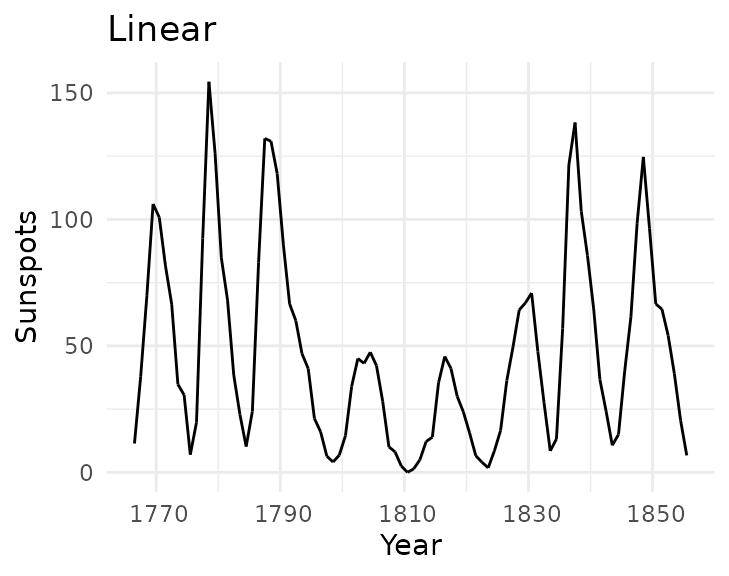
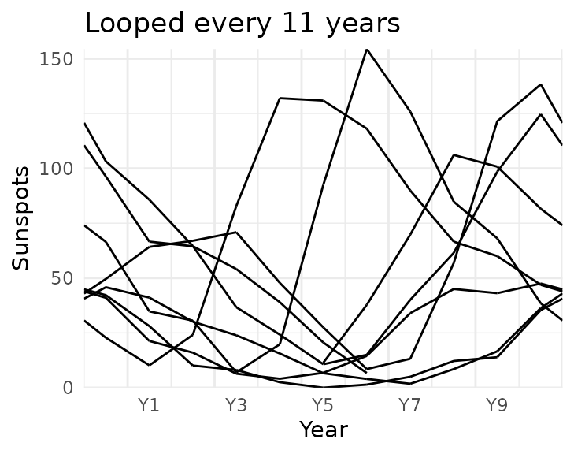
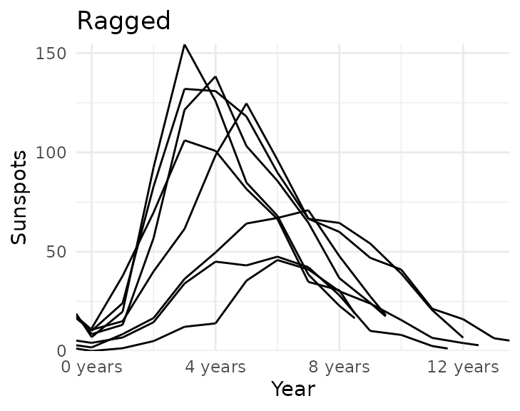
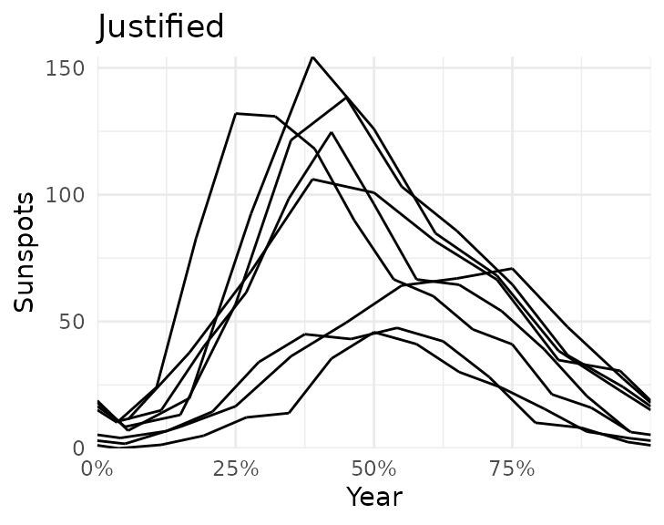
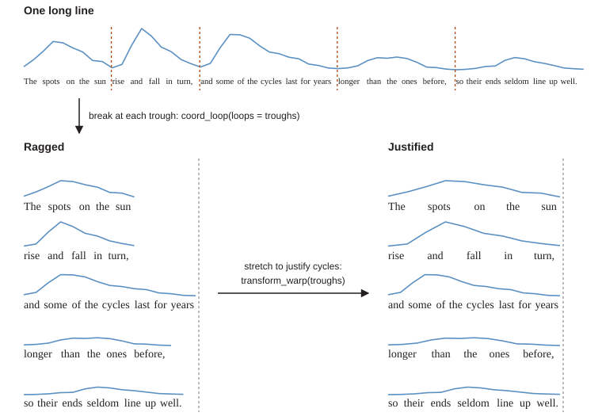
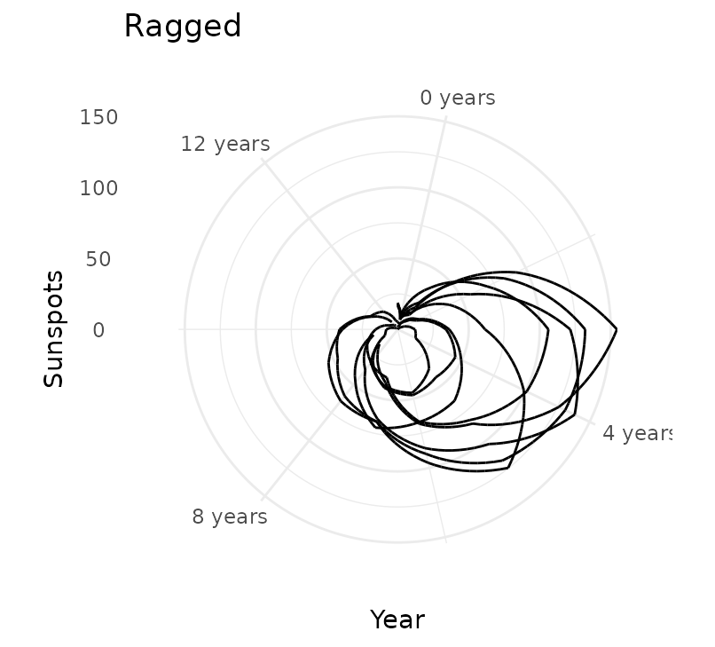
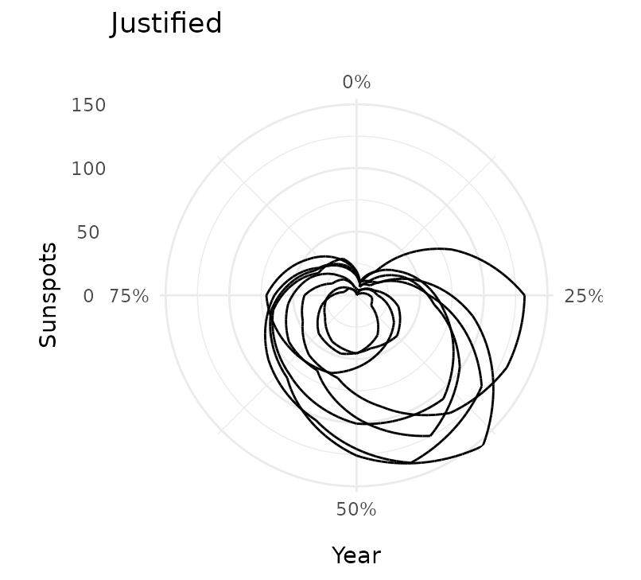
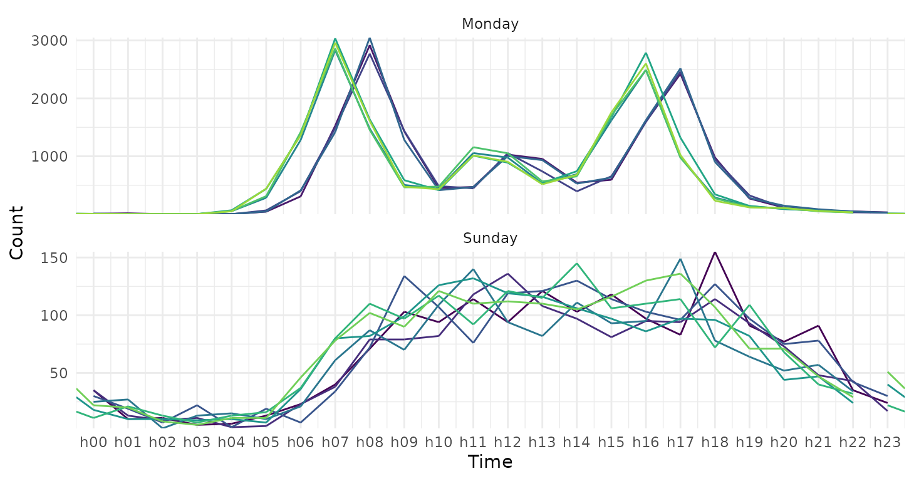
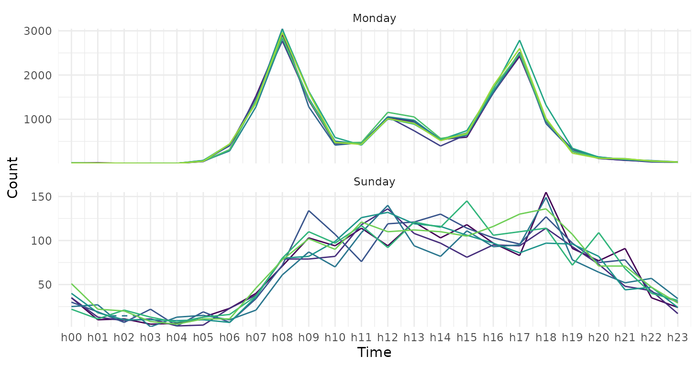
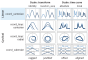

vignettes/time-arrangements.Rmd
time-arrangements.RmdMany time series have patterns that repeat, but not always over the same length of time. Sunspot numbers rise and fall in cycles lasting between nine and fourteen years. Seasonal patterns repeat over common calendar granules such as days and years. These granules also vary in length because leap years have an extra day and daylight saving gives some days 23 or 25 hours.
Looping a time series draws each repetition over the last, making them easier to compare. When the repetitions vary in length, we also need to choose how to line them up. This vignette shows how to make that choice with ggtime, and what each choice reveals.
library(ggplot2)
library(ggtime)
library(dplyr)
library(mixtime, warn.conflicts = FALSE)
theme_set(theme_minimal())Sunspots are dark spots on the sun that become more and less common about every eleven years. We’ll look at eight cycles from 1766 to 1855, each starting from a trough.
troughs <- year(c(1766L, 1775L, 1784L, 1798L, 1810L, 1823L, 1833L, 1843L, 1856L))
sunspots <- tibble(
Year = year(1766:1855),
Sunspots = as.numeric(window(sunspot.year, 1766, 1855))
)
sunspot_plot <- ggplot(sunspots, aes(Year, Sunspots)) +
geom_time_line()Since cycles last about eleven years, we could try looping every
eleven years with coord_loop().
sunspot_plot + labs(title = "Linear")
sunspot_plot +
coord_loop(time_loops = years(11L)) +
labs(title = "Looped every 11 years")

The peaks are scattered, because eleven years is only the average
length. Instead, we can give the troughs to loops, so that
each loop starts a new cycle. Adding transform_warp() to
the scale then stretches or compresses the cycles to the same width.
ragged <- sunspot_plot +
labs(title = "Ragged") +
scale_x_mixtime(time_breaks = years(4L))
justified <- sunspot_plot +
labs(title = "Justified") +
scale_x_mixtime(transform = transform_warp(troughs))
ragged + coord_loop(loops = troughs)
justified + coord_loop(loops = troughs)

Like lines of text, cycles can be left ragged or justified to a common width. Looping adds the line breaks, and warping stretches each line to fit. Ragged axes show the time since the start of each cycle, and justified axes show the proportion of the cycle.

The loops can also be drawn around a circle with
coord_radial(). Shorter ragged cycles stop before
completing the circle, while justified cycles all go around exactly
once.
ragged + coord_loop(loops = troughs, coord = coord_radial())
justified + coord_loop(loops = troughs, coord = coord_radial())

People follow local time, but clocks can change. Daylight saving starts in Melbourne on the first Sunday in October, when clocks skip from 2am to 3am. We’ll look at hourly pedestrian counts at Southern Cross Station on the Sundays and Mondays from three weeks before to three weeks after the change in 2015.
station <- tsibble::pedestrian |>
filter(
Sensor == "Southern Cross Station",
Date >= "2015-09-13", Date <= "2015-10-26",
day_of_week(Date) %in% c("Sun", "Mon")
) |>
mutate(Time = mixtime(Date_Time))
station_plot <- ggplot(station, aes(Time, Count, colour = factor(Date))) +
geom_time_line() +
facet_wrap(vars(weekdays(Date)), ncol = 1, scales = "free_y") +
scale_colour_viridis_d(end = 0.85, guide = "none")We’d like to loop over days, but how long is a day? Without daylight
saving, every day is 24 hours long. To see what happens if we ignore it,
we can set the time_chronon of the scale to use
"Australia/Brisbane" time. Brisbane shares Melbourne’s
standard time (UTC+10) but never changes its clocks.
station_plot +
scale_x_mixtime(
time_chronon = hour(1L, tz = "Australia/Brisbane")
) +
coord_loop(time_loops = days(1L))
The pattern is offset once daylight saving starts. Commuters arrive at the same time each Monday on Melbourne’s clocks, but after the change their rush hours appear an hour earlier on this scale. Sundays are less regular, so the offset is harder to see.
Without a time_chronon, the scale uses the time zone of
the data. Our data is in Melbourne time, so days(1L) now
loops from midnight to midnight in Melbourne. If the data were stored in
UTC, the Mondays would still be misaligned.
station_plot +
coord_loop(time_loops = days(1L))This aligns the Mondays, but not the Sunday when clocks change. Its loop starts at the right time, but the scale measures absolute time: the hours that have passed since midnight. Only two hours had passed by 3am, so the rest of the day is drawn an hour too early. The day is 23 hours long, so its line ends early and the days are ragged.
To fix this, we change the scale rather than the loop. A
time_chronon without a time zone (tz = NA)
measures local time, as shown on the clock.
station_plot +
scale_x_mixtime(time_chronon = hour(1L, tz = NA)) +
coord_loop(time_loops = days(1L))
Every day now has 24 hours on the clock, so all of the days are aligned. The skipped hour is drawn as a dashed line.
The scale decides how time is measured, and the coordinates decide
how it is laid out: along a line, in loops, or in the rows of a calendar
(coord_calendar()). Any scale can be combined with any
coordinates.
